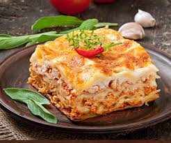

Home
Lasanha de Frango

Deliciosa Lasanha de frango em camadas com queijo
Esta receita de lasanha de frango é uma deliciosa combinação de camadas de massa, frango desfiado, molho de tomate e muito queijo. É perfeita para um jantar em família ou uma ocasião especial.
Ingredientes
- 500g de peito de frango cozido e desfiado
- 9 folhas de massa para lasanha
- 2 xícaras de molho de tomate
- 1 xícara de queijo muçarela ralado
- 1/2 xícara de queijo parmesão ralado
- 1 cebola picada
- 2 dentes de alho picados
- 1 colher de sopa de azeite
- Sal e pimenta a gosto
Passo a Passo
- Preaqueça o forno a 180°C.
- Em uma panela, aqueça o azeite e refogue a cebola e o alho até ficarem dourados.
- Adicione o frango desfiado e misture bem. Tempere com sal e pimenta a gosto.
- Em um refratário, coloque uma camada de molho de tomate no fundo.
- Coloque 3 folhas de massa para lasanha sobre o molho.
- Adicione metade do frango desfiado sobre a massa.
- Polvilhe com metade do queijo muçarela.
- Repita as camadas: molho de tomate, massa, frango e queijo muçarela.
- Finalize com mais 3 folhas de massa, o restante do molho de tomate e polvilhe com queijo parmesão.
- Cubra com papel alumínio e leve ao forno por 30 minutos.
- Retire o papel alumínio e deixe gratinar por mais 15 minutos ou até que o queijo esteja dourado.
- Deixe descansar por alguns minutos antes de servir.